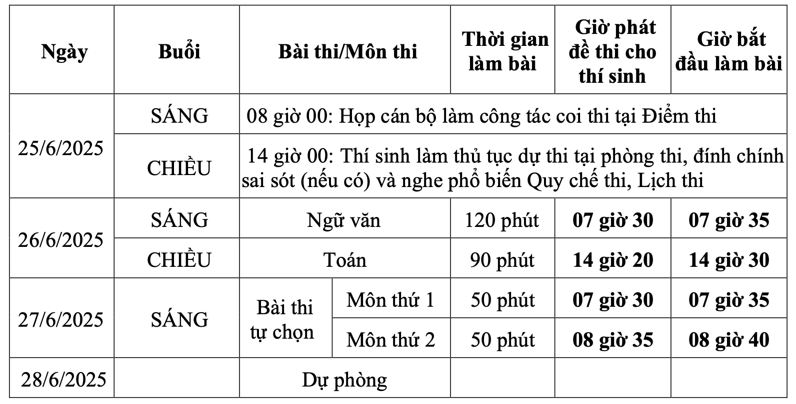
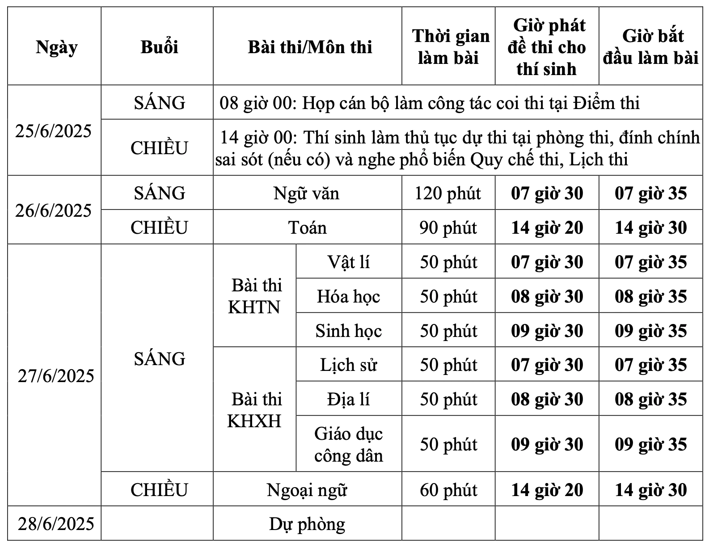

Chốt lịch thi tốt nghiệp THPT 2025
Kỳ thi tốt nghiệp THPT năm 2025 diễn ra trong hai ngày 26-27/6, với hai lịch thi dành cho thí sinh học theo chương trình mới và cũ.
Bộ Giáo dục và Đào tạo ngày 24/3 ra hướng dẫn tổ chức kỳ thi tốt nghiệp THPT năm 2025, trong đó nêu chi tiết lịch thi.
Năm nay, lứa thí sinh đầu tiên theo chương trình 2018 thi tốt nghiệp, nhưng vẫn còn thí sinh học theo chương trình cũ (2006) có nhu cầu thi lại để được xét công nhận tốt nghiệp hoặc lấy điểm đăng ký vào đại học. Do đó, Bộ đưa ra hai lịch thi, với hai nhóm này.
Lịch thi đối với thí sinh theo chương trình giáo dục phổ thông hiện hành (năm 2018):

Lịch thi đối với thí sinh theo chương trình giáo dục phổ thông 2006:

Nhóm thí sinh thi tốt nghiệp lần đầu phải làm bốn bài thi, bắt buộc có Toán và Ngữ văn. Ngoài ra, các em chọn hai môn đã học ở trường (Hóa học, Vật lý, Sinh học, Địa lý, Lịch sử, Giáo dục kinh tế và pháp luật, Tin học, Công nghệ và Ngoại ngữ).
Đề thi Ngữ văn theo hình thức tự luận. Các môn còn lại theo dạng trắc nghiệm với các câu hỏi chọn phương án đúng, đáp án đúng/sai và trả lời ngắn.
Trong công thức tính điểm xét tốt nghiệp, điểm các môn thi chiếm 50%; còn lại là điểm học bạ lớp 10, 11 và 12 (50%) và điểm ưu tiên nếu có. So với trước, điểm học bạ tăng 20%.
Thí sinh thi theo chương trình cũ sẽ làm bài thi Ngữ văn, Toán, ngoại ngữ, cùng một trong hai bài Khoa học tự nhiên (Vật lý, Hóa học, Sinh học) và Khoa học xã hội (Lịch sử, Địa lý, Giáo dục công dân).
Kết quả thi sẽ được công bố vào ngày 16/7, sớm hơn năm ngoái một ngày.
Thí sinh thi tốt nghiệp THPT năm 2024 tại TP HCM. Ảnh: Quỳnh Trần